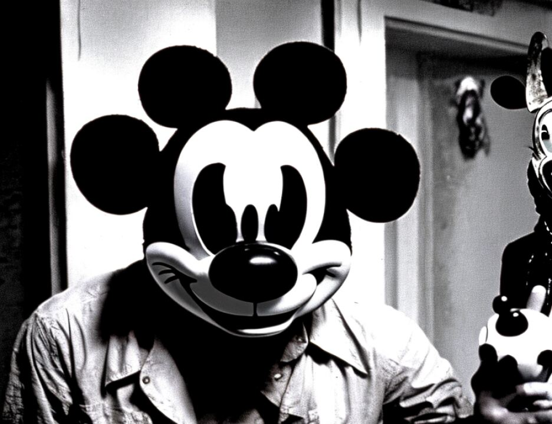

15 MR. COHN: It does, because it's responsive sort of
16 to your question, and that is this: That an Allen charge
17 traditionally says you should go back and try again because
18 there's no reason to believe another jury won't come to the
19 same conclusion. Another jury can't come to the same
20 conclusion. It never gets to go to another jury, and
21 therefore, an Allen charge will always be inappropriate. And
22 in my view, a deadlock notice is a verdict.
23 THE COURT: A deadlock --
24 MR. COHN: Is a verdict.
25 THE COURT: A deadlocked jury is a verdict because
6641
1 the consequences of a deadlocked verdict are that the death
2 sentence cannot be imposed.
3 MR. COHN: That's right. That's my view and that's
4 what a deadlock notice means.
5 Secondly, if your Honor is not going to tell them in
6 your preliminary charge the language about lack of unanimity,
7 I ask that you reconsider your language on page 8 of your
8 preliminary charge just below the typographical error that was
9 corrected. And after you look at it, I'll tell you why.
10 THE COURT: It's a statute.
11 MR. COHN: Yes, but it is technically correct, your
12 Honor. But in the context of what you are doing about not
13 telling them that lack of unanimity will result in a verdict
14 of life without parole, it misstates the spirit because it
15 indicates the only way they get life without parole is by
16 unanimity saying no death. And while it does restate the
17 statute and it is technically correct, it's only half the
18 issue and creates a misimpression at this stage, which I think
19 the jury ought not to have.
20 So the answer is it's not incorrect. I just think
21 it's incomplete. And given that you won't give the balancing
22 language later on, you ought to reconsider how you do that. I
23 think that you can fairly tell the jury in place of this that
24 a unanimous verdict for death will result in death and leave
25 it alone.
6642
1 THE COURT: That's what I say.
2 MR. COHN: No, you don't. You say a unanimous
3 verdict for life -- what you say is if the jury is
4 unanimous -- is not justified --
5 THE COURT: The second part of the language, "must be
6 unanimously and beyond a reasonable doubt before you consider
7 imposition of the death sentence" on page 4.
8 MR. COHN: But here, your Honor, look on page 8,
9 where it says --
10 THE COURT: Top of 3, with respect to both the
11 Gateway and the statutory the jury is told that they must be
12 unanimous and beyond a reasonable doubt before they can even
13 consider it.
14 MR. COHN: Yes, that's right, Judge. But now on page
15 8 you are on balancing.
16 THE COURT: Yes.
17 MR. COHN: And you say, "and if after such balancing
18 the jury unanimously determines that a sentence of death is
19 not justified with regard to it, then he will be sentenced to
20 life imprisonment." And I suggest to you that, your Honor,
21 that while that is correct in terms of the statute, a
22 unanimous verdict, which I'm sure the Court would much prefer,
23 would result in that, it is also true that the failure to
24 reach a unanimous verdict that --
25 THE COURT: You would like that second sentence to
6643
1 read, "If after such a verdict the jury does not unanimously
2 determine that a sentence of death is justified, the law
3 provides...," that's what you would like?
4 MR. COHN: I would like that, but I thought your
5 Honor said you won't charge that in this document, and
6 therefore -- and if I'm wrong, yes, that's what I would like
7 it to say.
8 THE COURT: I could strike "unanimously." It will
9 not change the sentence. It could read, "If after such a
10 balance, the jury determines that a sentence of death is not
11 justified."
12 MR. COHN: No, Judge, I think that doesn't meet it.
13 If it's going to talk about a determination of what is
14 justified, then it should say, "A jury determines that it is
2